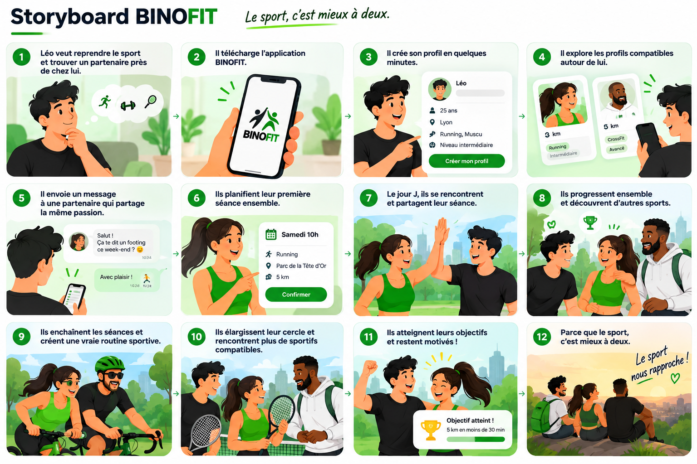
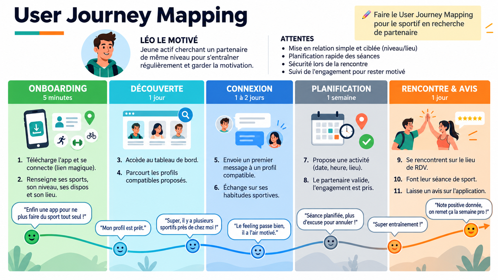
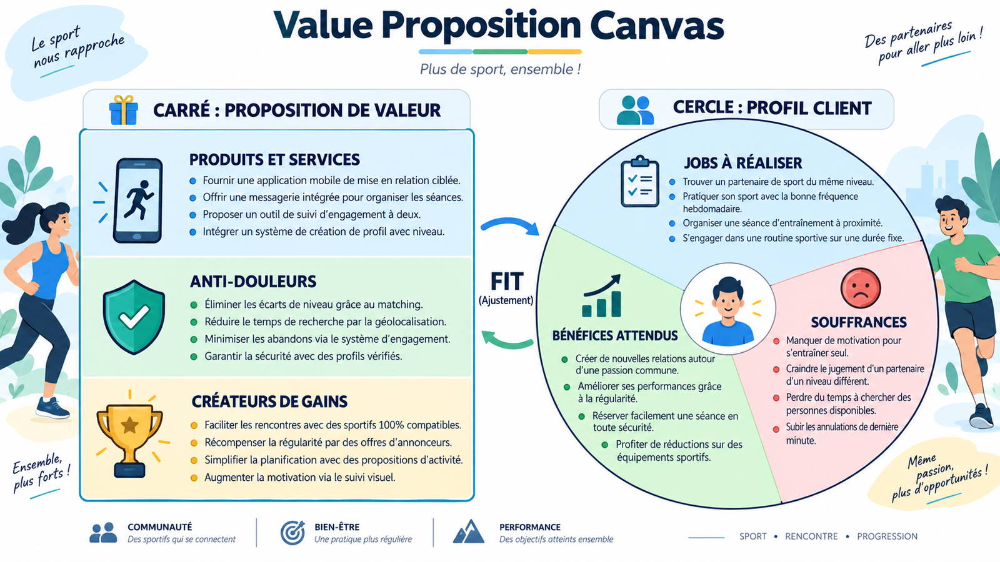

Trois sportifs, un même besoin.
Des personas réalistes, le récit d’un parcours complet, la carte du parcours et la proposition de valeur.
Trois regards, un même besoin.
Chaque persona montre comment l’application répond à une motivation, un frein et une attente précis.
Storyboard
Léo veut reprendre le sport près de chez lui. Douze étapes, de l’inscription à la routine partagée.

Le parcours d’Eva
Eva emménage à Lyon.
Nouvelle ville, nouveau job, sa raquette dort dans un placard.
Elle télécharge BinoFit.
« Le sport, c’est mieux à deux » : elle appuie sur Commencer.
Elle complète son profil.
Tennis, intermédiaire, Presqu’île, libre mardi et samedi soir.
Elle ouvre la carte.
Rayon 10 km, Tennis : plusieurs profils apparaissent autour d’elle.
Elle écrit à une joueuse.
« Bonjour ! Partante pour un match samedi ? »
La séance est calée.
Samedi 18 h, courts du parc. Elle apparaît dans Mes activités.
Premier match.
Même niveau, beaux échanges, aucun temps mort.
Le binôme continue.
Elles se donnent rendez-vous chaque semaine.
User Journey Map
Le parcours de Léo, jeune actif qui cherche un partenaire de même niveau pour s’entraîner régulièrement.

Value Proposition Canvas
La proposition de valeur (carré) face au profil client (cercle) : les jobs, les souffrances et les bénéfices attendus de Léo.
